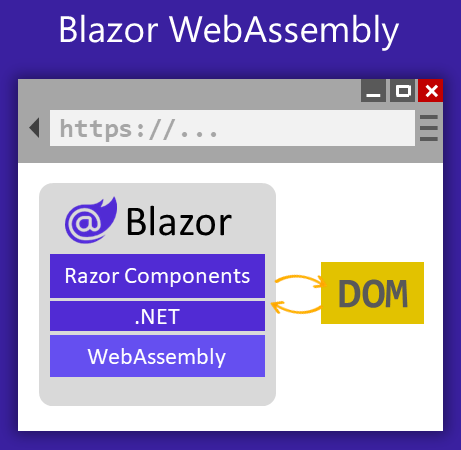
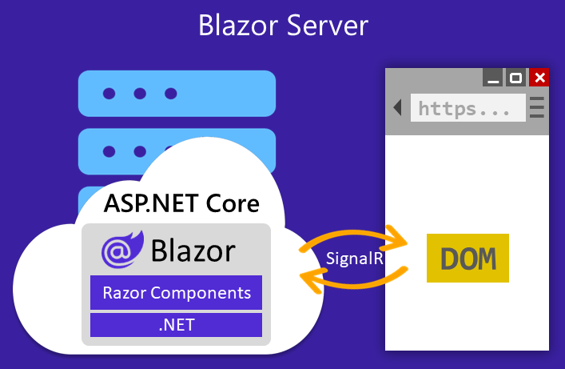

You can build applications that support both, but you have to choose one when you deploy to production.
### Blazor in ASP.NET Core 8.0
#### Render Modes Are Now The Foundation
- Static
- Interactive Server
- Interactive WebAssembly
- Interactive Auto
From the Docs: [ASP.NET Core Blazor render modes](https://learn.microsoft.com/en-us/aspnet/core/blazor/components/render-modes?view=aspnetcore-8.0#render-modes)
Coder Foundry's Demo and Sample:
Demo: https://www.youtube.com/watch?v=u4azTLLGt8U&t=654s
Sample: https://github.com/CoderFoundry/BlazorRenderModes
### Enhanced Navigation
Normal navigation: A full-page reload is triggered when the user navigates to a different page.
Enhanced navigation: Blazor automatically intercepts the request and performs a fecth request to the server. Blazor patches the response into the DOM.
This works in Server Side Rendering (Static Render Mode) and is where it really stands out!
From the Docs: [Enhanced navigation and form handling](https://learn.microsoft.com/en-us/aspnet/core/blazor/fundamentals/routing?preserve-view=true&view=aspnetcore-8.0#enhanced-navigation-and-form-handling)
### Enhanced Form Handling
For forms this is opt-in behavior
Enhanced navigation: Blazor automatically intercepts the request and calls server-side code.
Blazor patches the updates into the DOM.
Opt in with:
- `data-enhance` attribute in `<form>`
- `Enhance` attribute in `<EditForm>`
From the Docs: [Enhanced navigation and form handling](https://learn.microsoft.com/en-us/aspnet/core/blazor/fundamentals/routing?preserve-view=true&view=aspnetcore-8.0#enhanced-navigation-and-form-handling)
### Render Razor Components Outside of ASP.NET Core
- Blazor components can be rendered outside of ASP.NET Core
- Console apps or services that can benefit from HTML fragments
- Not the same thing as [Blazor Hybrid](https://docs.microsoft.com/en-us/aspnet/core/blazor/hybrid?view=aspnetcore-8.0)
- Blazor Hybrid provides support for .NET MAUI, WPF, WinForms, etc.
From the Docs: [Render Razor components outside of ASP.NET Core](https://learn.microsoft.com/en-us/aspnet/core/blazor/components/render-components-outside-of-aspnetcore?view=aspnetcore-8.0)
### Identity UI Components
- Blazor generates a Blazor-based Identity UI
- Previously based on Razor Pages
- Currently select Individual Accounts
- Currently only works with Server-Side Blazor
- Your project is pre-filled with components and code to enable Identity
- More guidance and samples to come
From the Blog Post: [Blazor Identity UI](https://devblogs.microsoft.com/dotnet/asp-net-core-updates-in-dotnet-8-rc-2/#identity)
From the Docs: [Blazor Identity UI](https://learn.microsoft.com/en-us/aspnet/core/release-notes/aspnetcore-8.0?view=aspnetcore-8.0#blazor-identity-ui)
TheDevTalkShow: [First look at Blazor Authentication and Authorization in .NET 8](https://www.youtube.com/watch?v=JMVjLXE-7YY)
### References
[Full stack web UI with Blazor in .NET 8 | .NET Conf 2023](https://www.youtube.com/watch?v=YwZdtLEtROA&list=PLdo4fOcmZ0oULyHSPBx-tQzePOYlhvrAU&index=3)
[Intro to Blazor in .NET 8 | Tim Corey](https://www.youtube.com/watch?v=walv3nLTJ5g)